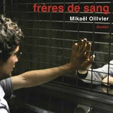
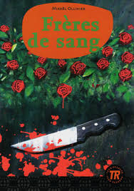

« Frères de sang », de Mikaël Ollivier en 2003, raconte l'histoire
de Brice et de son jeune frère Martin. Brice est accusé à tort
de cinq meurtres et se retrouve en prison. Son petit frère Martin
est déterminé à prouver l'innocence de Brice et à le faire
sortir de prison même si toutes les preuves s'y opposent.

Photo de couverture

Photo de couverture 2
Il s'agit de deux couvertures différentes du
livre. L'image de couverture supérieure se trouve sur
Amazon et l'image de couverture inférieure est en vente avec
le livre sur le site de Klett. Il y a d'autres couvertures
de ce livre, ce ne sont que deux exemples.
Résumé du livre
Au début, tout va bien dans cette famille idéale. Puis très
vite, tout va mal. Mais alors vraiment très mal. Pire que tout
ce que vous pouvez imaginer. Quand vous avez 14 ans, que votre
frère aîné est accusé de meurtre, que toutes les preuves
l'accablent, que même chez vos parents le doute s'immisce... Vous
faites quoi ? Soit vous criez avec les loups, soit vous
refusez l'évidence. Et vous restez fidèle à votre pacte de Frères de sang.
Un flip énorme, un suspense hallucinant, une histoire de fratrie qui vous noue les tripes.